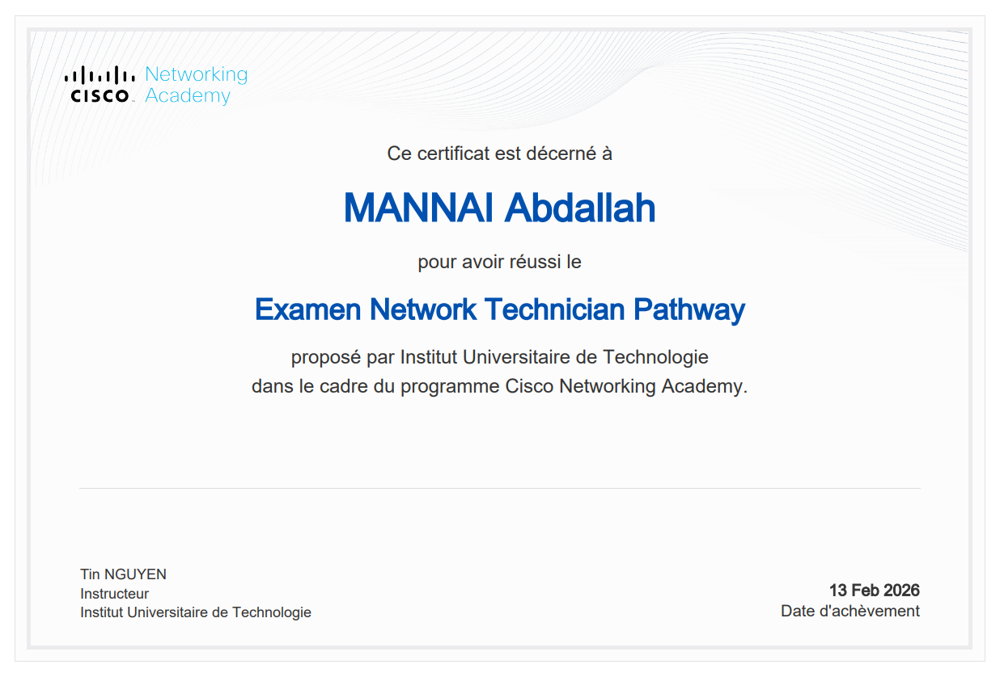
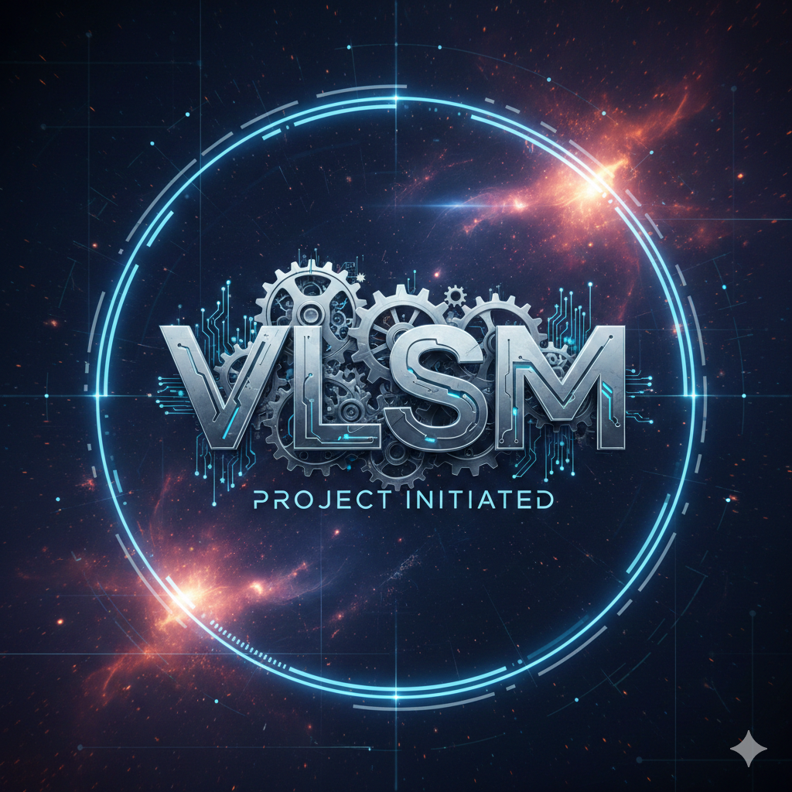
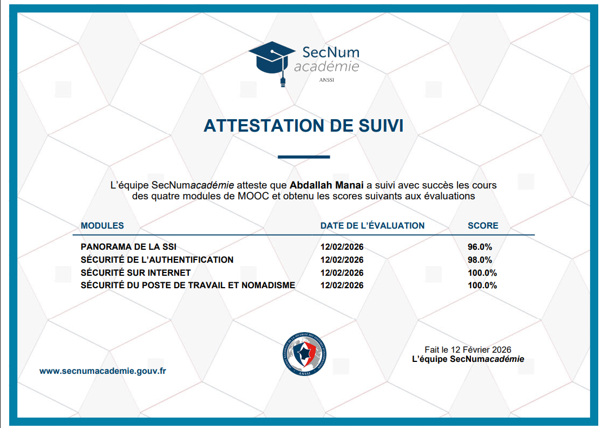
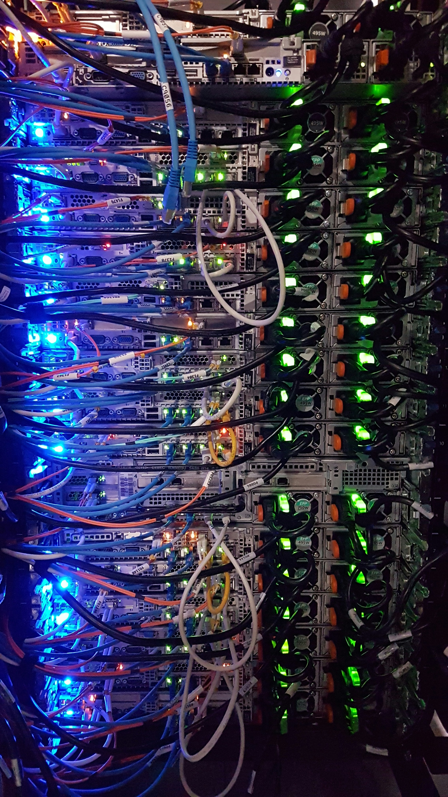
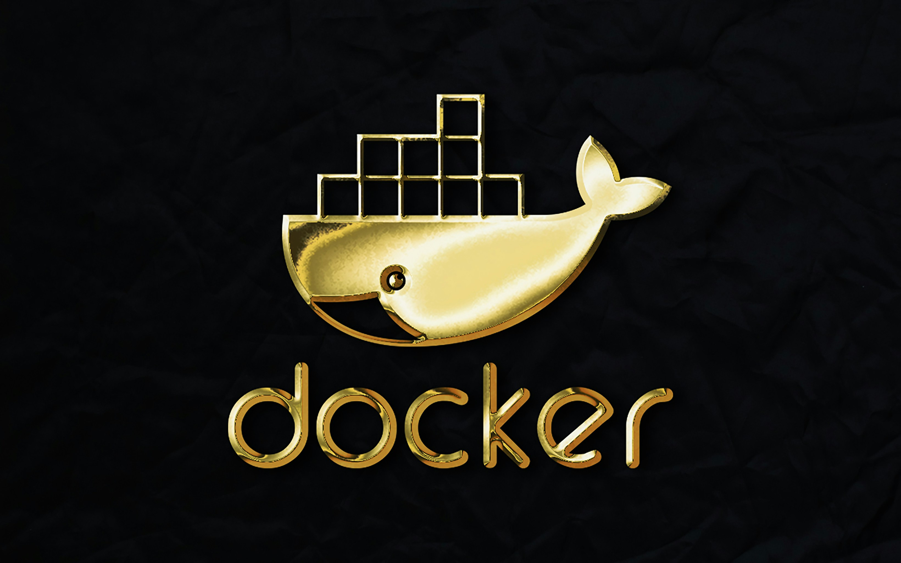
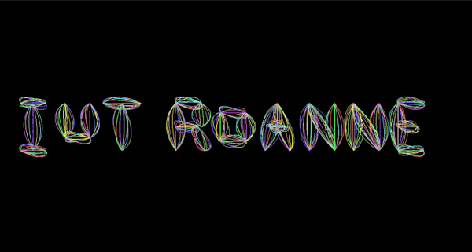
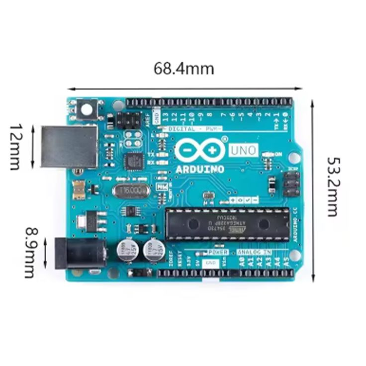
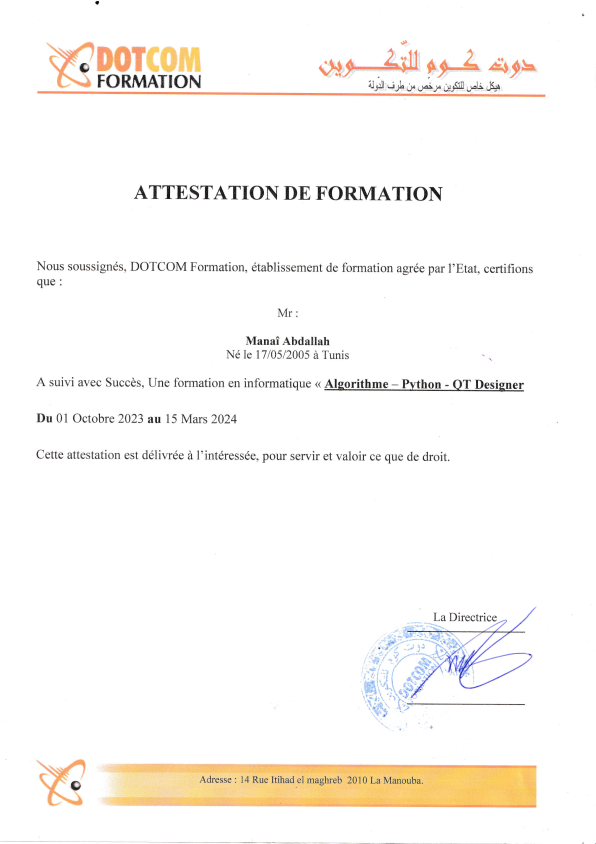
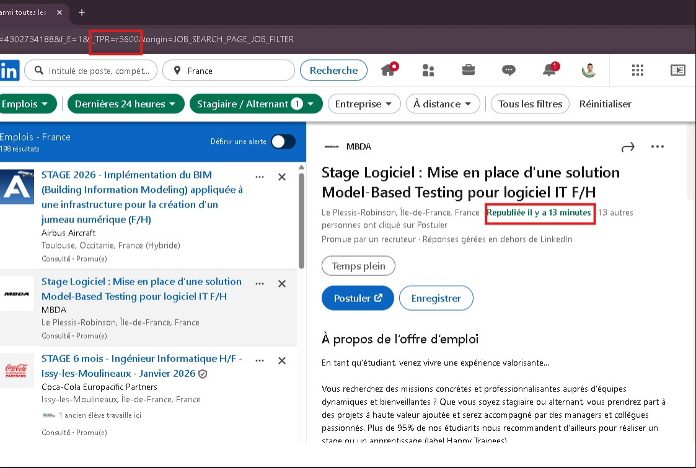

Optimiser sa recherche d'alternance via l'URL LinkedIn
Découvrez comment hacker l'URL de LinkedIn pour voir les offres publiées il y a moins d'une heure...
• SecNumAcadémie (ANSSI)
• Cisco CyberOps Associate (En cours)
• Cisco CCNA
(En cours)
• Français (TCF C1)
• Anglais (TOEIC C1)
• Espagnol (SIELE B1)

Certification

Certification

Projet Web/Mobile

Certification

Projet Réseau & Systèmes

Projet Réseaux · LoRa
Projet Réseaux · VoIP

Projet Systèmes · Automatisation

Projet · Python & Maths

Projet Cyber · Python
Projet · React & Firebase

Projet · Arduino & Signal
Projet Systèmes · DevOps

Certification

Découvrez comment hacker l'URL de LinkedIn pour voir les offres publiées il y a moins d'une heure...

Découvrez comment identifier un OS (Windows, Linux, Cisco) simplement avec une commande Ping...